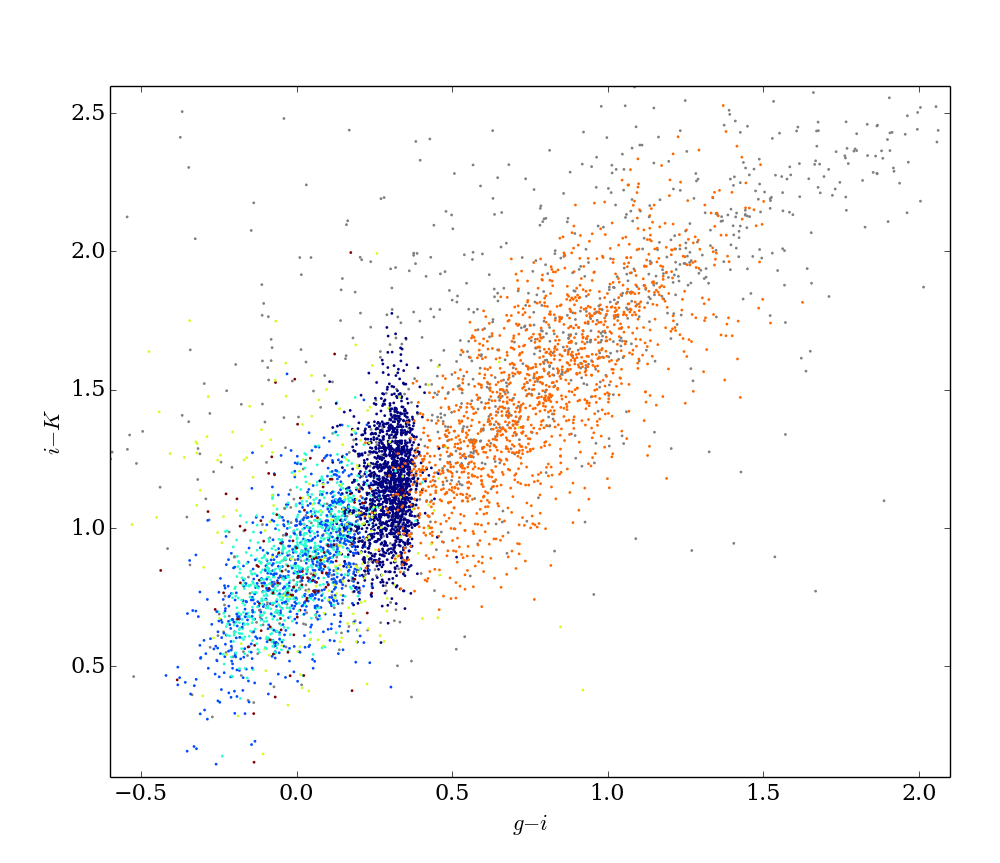

Enhanced Book figures from "Statistics, Data Mining, and Machine Learning in Astronomy"
View the Project on GitHub gully/astroMLfigs
I'm hacking figures from the textbook "Statistics, Data Mining, and Machine Learning in Astronomy"
